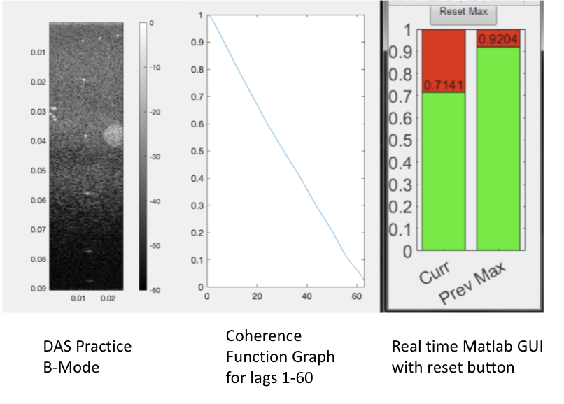

Vanderbilt BEAM Lab, Undergraduate
I wrote this program during a 10-week fellowship in the Vanderbilt Institute for Surgery and Engineering. I worked in Dr. Byram’s BEAM Lab under PhD candidate Emelina Vienneau. Emelina’s research revolves around making transcranial ultrasound possible for the first time. My project addressed one of the issues with transcranial ultrasound, finding a suitable acoustic window, by creating a real-time image guidance system to help the ultrasound scanner. I did this by calculating the lag-one coherence of the ultrasound data in real time using CUDA. I then interfaced this program with the ultrasound scanner (Verasonics) to act as real-time assistance using MEX. Here is a video demonstration of the final product and more details on the project:
I had to do extensive literature review on ultrasound basics and data, calculating coherence, and acoustic windows. I then implemented a few offline MatLab functions including a delay-and-sum beamforming program that produces B-Mode images (left image), a MatLab coherence function from which I based my C implementation (middle), and an intuitive GUI that displays the current coherence, previous max, and has a reset max button (right). Finally, I wrote the CUDA version that could process the data in real time using GPU parallel processing . Check out my Github for the code!
Important file to look at: DAS_GPU_phased_array_probe_Verasonics_RF_buffer_data_type
Thank you to Emelina, Chris, and Dr. Byram!